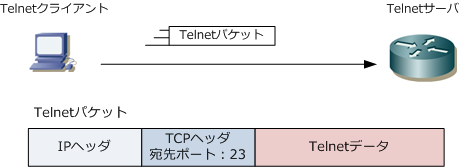
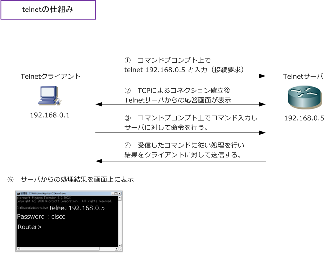
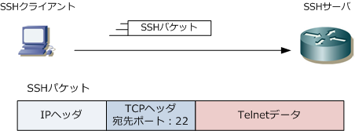

Telnet / SSH
Telnetとは
Telnetは、ネットワークに接続された機器を遠隔操作するために使用するアプリケーション層プロトコル。 オフィスのデスクにいながら、マシンルームにあるサーバ、ルータ等の機器をパソコン上で操作できます。 PCにはtelnetクライアント、ルータなどの機器にはtelnetサーバのサービスが有効であることが前提です。
Telnetのパケット
TelnetクライアントがTelnetサーバにアクセスする際、宛先ポート番号にTCPポート番号23を使用します。

Telnetの仕組み
PCからのtelnetはコマンドプロンプトから「 telnet 192.168.0.5 」というように入力するか、または Tera Term等でIPアドレスを入力してtelnetを行います。そして、TCPによるコネクション確立後、PC のコマンドプロンプトでtelnetサーバからの応答画面が表示されます。telnetで遠隔操作を行うためには 遠隔操作する機器にログインする必要があるので、最初の応答画面ではパスワードが要求されます。

telnetクライアントでは、パスワード情報のコマンドを入力して命令を行います。そのコマンドを受信した telnetサーバではそれを処理し、結果をtelnetクライアントに返信します。命令と結果をやりとりの繰り返し。
SSHとは
SSH (Secure SHell) とは、ネットワークに接続された機器を遠隔操作するために使用するアプリ層の プロトコルです。telnetの場合、パスワード情報を含め全てのデータが暗号化されずに送信されるのに 対して、SSHではパスワード情報を含めて全てのデータが暗号化されて送信されます。現在 Cisco では Cisco機器への管理アクセスはセキュリティの観点からTelnetではなくSSHのアクセスを推奨しています。 ※ SSHで遠隔操作を行うためにはログインする必要があり、遠隔操作される機器にはユーザ名とパスワードの設定が必要です。
SSHのパケット
SSHクライアントがSSHサーバにアクセスする際、宛先ポート番号としてTCPのポート番号 22 を使用。

SSHのバージョン
SSHには2種類あります。SSH1（SSHプロトコル version 1）と、SSH2（SSHプロトコル version 2）。 SSH1とSSH2とでは当初「認証方式」に違いがありました。SSH1ではRSA公開鍵暗号、SSH2ではDSA 公開鍵暗号方式を採用した認証を行っていました。「RSA」か「DSA」なのかが違いとしてありました。
しかし後にSSH2においてもRSA公開鍵暗号による認証が可能になりました。さらにDSAよりRSAの方が 安全性が高いことから、SSH2の認証もRSA公開鍵暗号が主流となっています。これでは、SSH1とSSH2 ともに同じ認証方式を採用しているのでSSHのバージョンの違いがないのではと思われるかもしれないが SSH1に比較してSSH2の方がより安全性が高いという違いがあります。SSHクライアントとSSHサーバが SSH1とSSH2をサポートしている場合は「 SSH2におけるRSA公開鍵暗号 」による認証が推奨となります。